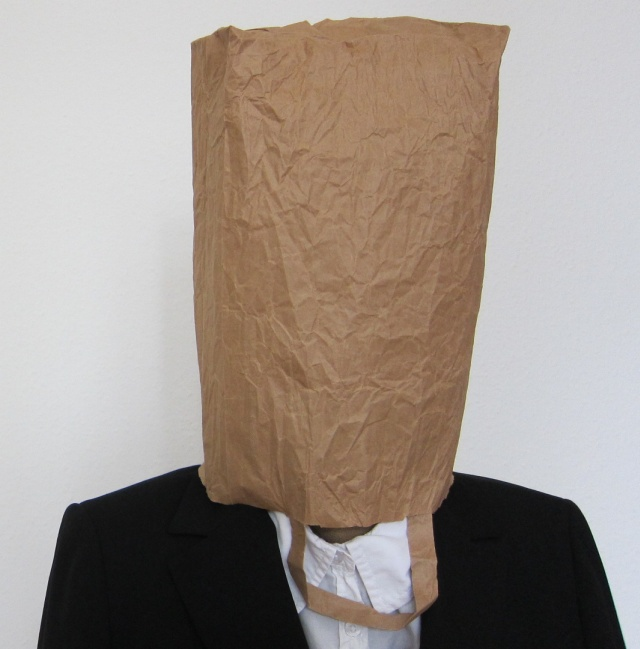

i'll read what she wrote...
i'm bored, brown bananas.
a cat on a coffee table catches
light from the window where a
willow walks in place.
there's a bag on my face.
a double door triple dog dares
me to walk through the "right" side.
reaching so slowly, i remember the
way that the willow held its hands out
over the dirt and through the pane.
i tried to enter, but "left,"
it only led to an exit!
so i guess i never really made it in.
a swan's voyage song a maiden sings.
i mistook a church bell for my cell phone
ringing. i let it go to voicemail and listened
to the message left, right away.
now i can only walk backwards.
doors are always open when i
approach them, and the room i enter
is always the one i was just in.
